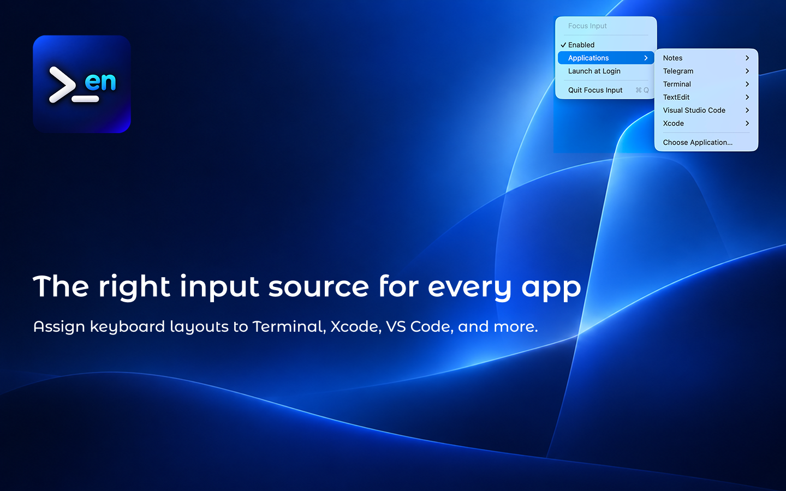
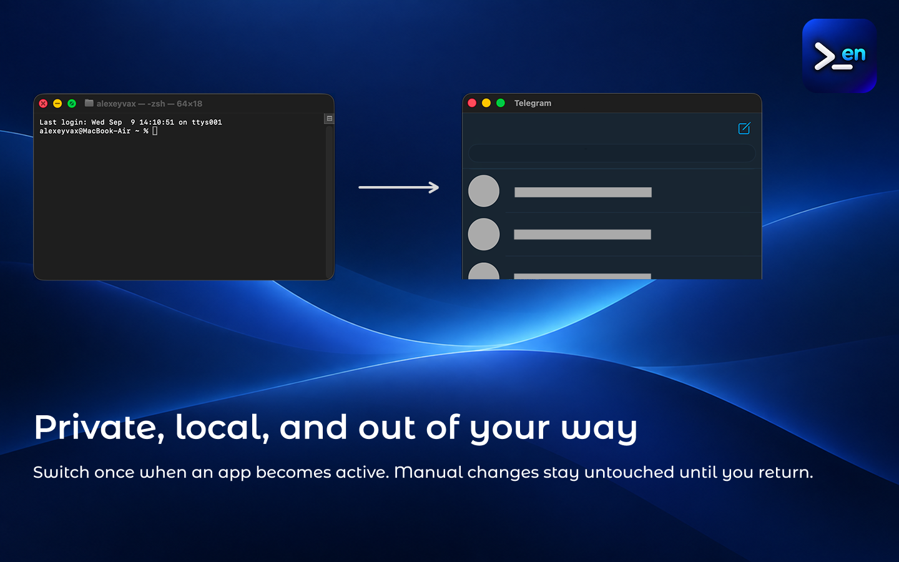

Focus Input for macOS
Keyboard input sources by app.
Switch keyboard input sources automatically as you move between apps. Create flexible per-app rules while keeping manual changes untouched.
Download on the App StoreMade for multilingual workflows
Stay in the right layout
Focus Input is a native macOS menu bar utility that associates a preferred keyboard input source with an application. When a configured application becomes active, Focus Input selects that source once.
Applications without a rule are left unchanged, and manual source changes remain untouched until you leave and return to the configured application.
App preview
See Focus Input in action


Features
Designed to stay out of your way
- Assign a preferred keyboard input source to each application.
- Switch input sources when configured applications become active.
- Leave applications without configured rules unchanged.
- Keep manual changes until you leave and return to an application.
- Choose any installed macOS application.
- Enable or disable automatic switching at any time.
- Launch Focus Input automatically when you log in.
- Keep every rule locally, without networking or analytics.